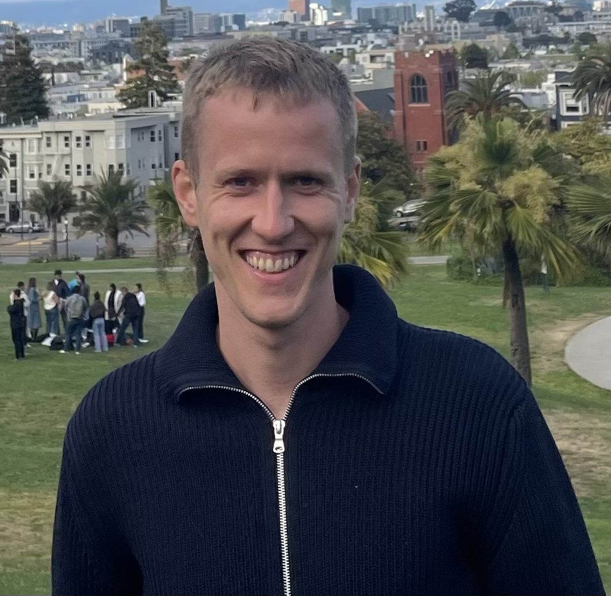

Sebastian Loeschcke
Ph.D. Student
Department of Computer Science, Machine Learning Section
University of Copenhagen and Pioneer Centre for Artificial Intelligence
I work on efficient training of deep learning models, focusing on low-rank methods and quantization. I am advised by Michael J. Kastoryano and Serge Belongie, and supported by the Danish Data Science Academy (DDSA). In 2025, I spent six months visiting Anima Anandkumar’s group at Caltech, and collaborated with Jean Kossaifi (NVIDIA Research). In 2025–2026, I completed a six-month internship at Qualcomm AI Research in Amsterdam, working with the Model Efficiency group under the supervision of Markus Nagel.

